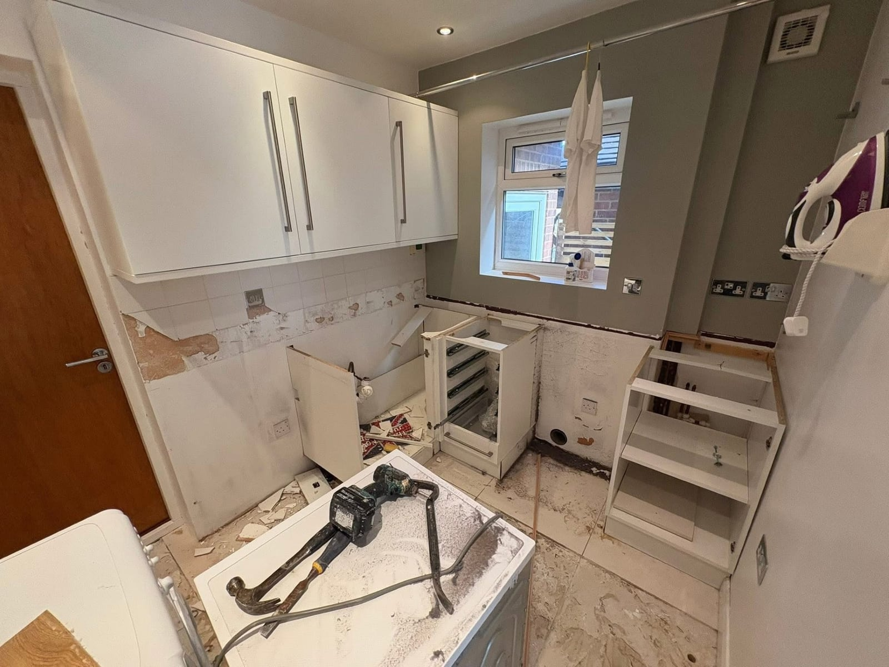
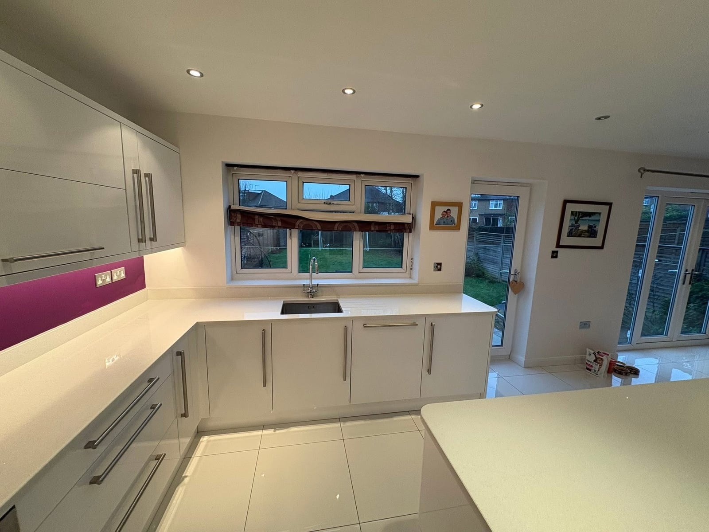
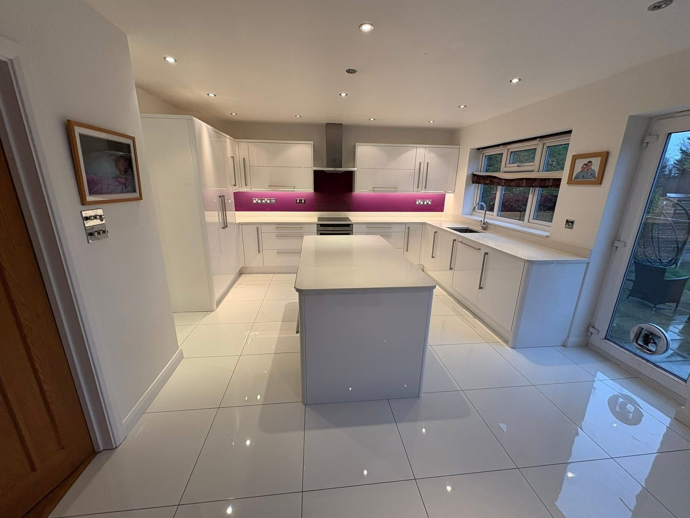
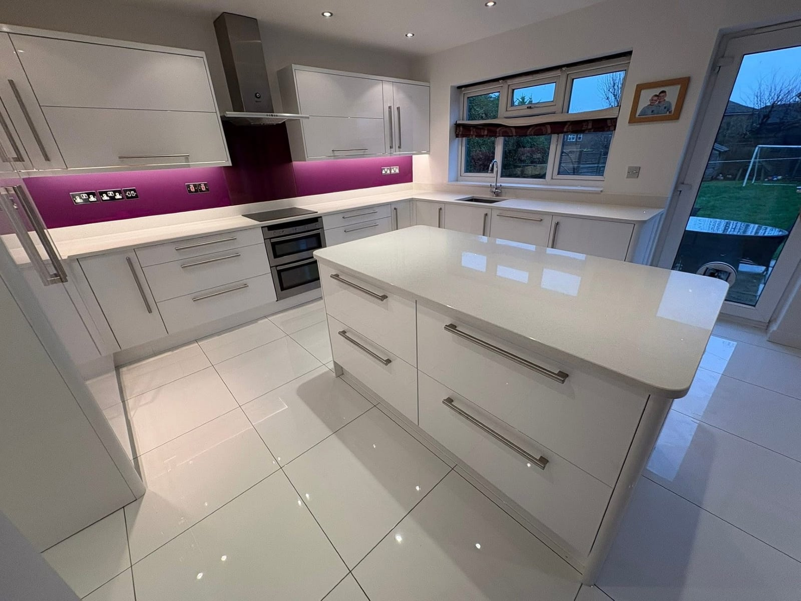
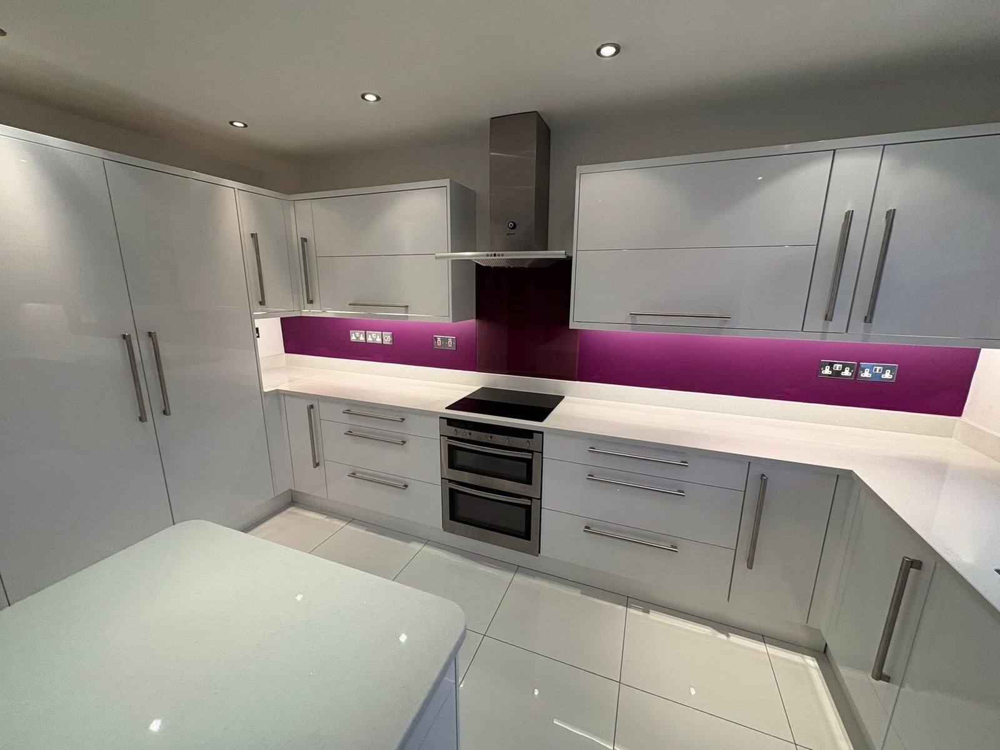
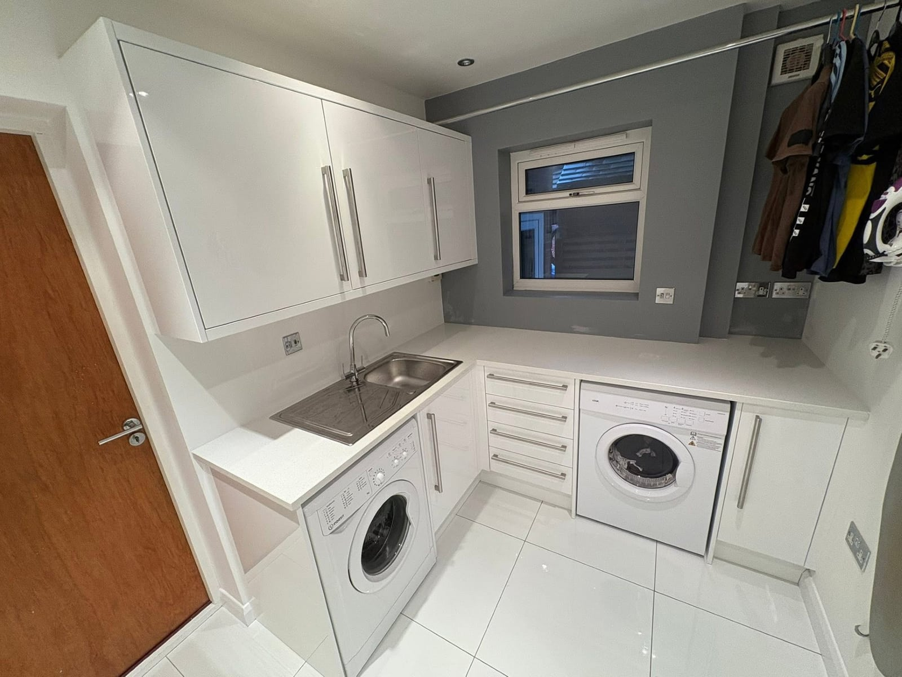

Residential Renovation
A full kitchen and utility room renovation, stripped back to brick and rebuilt with handleless gloss cabinetry, quartz worktops and a complete re-fit throughout.
The brief
A dated kitchen, fully stripped and reimagined.
Our client's kitchen and adjoining utility room had reached the end of their life, with tired cabinetry, dated tiling and worn worktops throughout. The brief was a complete strip-out and re-fit across both rooms, finished to a premium, modern standard.
Our team stripped both rooms back to bare walls and units, then installed new handleless high-gloss cabinetry, quartz worktops with a bold splashback, integrated appliances and a matching utility fit-out, all finished with new porcelain floor tiling throughout.
The work






The result
A bright, modern kitchen, finished to a premium standard.
A complete transformation across both rooms: clean lines, generous storage, integrated appliances and a finish that brings the heart of the home right up to date.
From strip-out through to final finishes, every detail managed in-house. The standard our residential clients expect from ARIA.
Planning your renovation?
From single rooms to whole-property renovations, ARIA delivers residential projects with the meticulous craftsmanship and transparent process our clients trust.
Get in touch